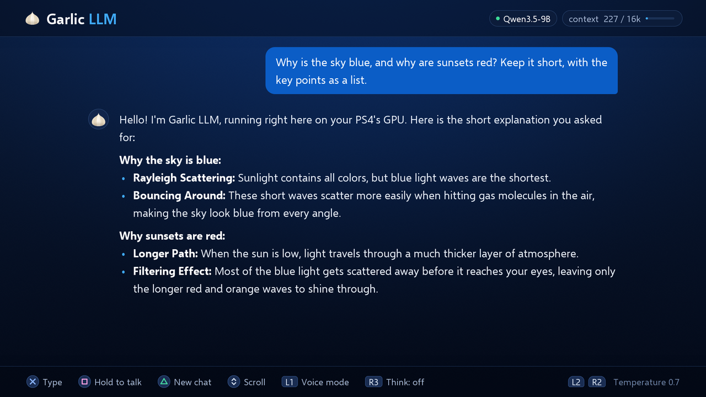

Text chat
The 9B model answers at 31–39 tokens per second, and up to 43 when it writes code. Speculative decoding (MTP) and custom 4-bit kernels make that possible on this hardware. The context window holds 16K tokens.
This paragraph arrives at 35 tokens per second, the middle of the range measured on the console. Each chunk is one token: a word, part of a word or a punctuation mark. A short reply of 60 tokens is on screen in under two seconds. A full answer of 300 tokens takes under nine seconds. Sixteen thousand tokens, the size of the context window, would take close to eight minutes. Code comes out a little faster, at up to 43 tokens per second. Nothing in this box is model output; it only shows the pace.
